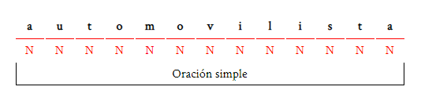
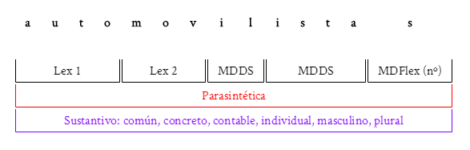

Escribir una nueva palabra
Para comenzar selecciona la pestaña "Archivo" y escribe tu palabra SEPARANDO LAS LETRAS POR ESPACIOS en este campo de texto:

Comenzar a editar
Ahora ya puedes analizar la palabra igual que una oración

Dejando en blanco los campos de las palabras "N" puedes hacer que desaparezcan

Para aprender más vea Editar